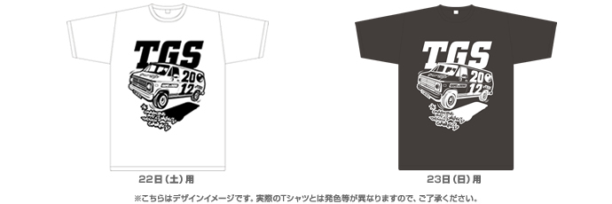
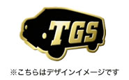
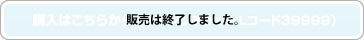

一般公開日入場料金のご案内
| 一般（中学生以上） | 当日券1,200円（税込）※当日会場でお求めいただけます 前売券1,000円（税込）※下記の販売窓口でお求めいただけます ※前売券の販売は9/21（金）23：59まで |
|---|---|
| 子供（小学生以下） | （小学生以下）無料 |
| TGSサポーターズクラブ | 前売券のみ：3,000円(税込) |
| 特別割引入場券 100円 （税込、当日券のみ） | * 各種障害者手帳、戦傷者手帳、被爆者健康手帳のいずれかを提示の方 * 介護が必要な場合、介護の方1名様 * 満70歳以上の方 |
前売チケット販売窓口【販売は9月21日(金)24時で終了しました】
プレイガイド、コンビニほか
- チケットぴあ［Pコード：987-853］（ぴあ、サークルK・サンクス、セブン-イレブン）
- ローソンチケット［Lコード：39999］
- セブン-イレブン（セブンコード：018-065）
- JTBエンタメチケット（JTB、セブン-イレブン、ファミリーマート、サークルK・サンクス）
- JTB法人東京（英語表記のみ）
- CNプレイガイド（CNステーション）
- イープラス（ファミリーマート）
- 楽天チケット
- サブナードプレイガイド
- チケットビューロー
- ちけっとぽーと
- SHIBUYA TSUTAYA
- 書泉グランデ/書泉ブックマート/書泉ブックタワー
- アニメイト（池袋本店/渋谷店/新宿店/秋葉原店/町田店/大宮店/川崎店/横浜店/津田沼店/千葉店）
- コミックとらのあな
- すばる書店
ゲームショップ ※一部取り扱いのない店舗があります。
- カメレオンクラブ
- スーパーソフトボックス/ドキドキ冒険島
複合カフェ ※一部取り扱いのない店舗があります。
- wip（ワイプ）
- アイ・カフェ AKIBAPLACE店
TGS2012 サポーターズクラブチケット
今年も、チケットと特製グッズを組み合わせたプレミアムチケット「TGS2012 サポーターズクラブ」を枚数限定で発売します。「TGS2012 サポーターズクラブ」には、TGS オリジナルグッズのほか、朝の開場から一定時間の優先入場などの特典付きです。是非、お早めにお買い求めください。
〈特典１〉オリジナルTシャツ付き

ほかでは手に入らないサポーターズクラブ限定オリジナルデザインのTシャツを差し上げます。サイズはS、M、L、XLから選べます。
申込み画面でサイズを選んでください。
■サイズ（着丈、身幅）＊単位：センチメートル / S （65、47.5）、M （68、50）、L （71、52.5）、XL（74、55）
※Tシャツの色は在庫により変更になる可能性があります。
〈特典２〉オリジナルピンパッジ付き
同じく、サポーターズクラブ限定オリジナルデザインのピンバッジを差し上げます。

〈特典３〉朝の開場から一定時間の優先入場を実施
TGS2012サポーターズクラブチケットをお持ちの方は、購入時に申し込んだご希望の一般公開日（22日、23日のいずれか）に、朝の開場から一定時間（20～30分を予定）の優先入場が可能です。
JR海浜幕張駅の始発時刻より、手荷物検査の先に「TGS2012サポーターズクラブチケット」専用ゾーンをご用意しますので、サポーターズクラブチケットをお持ちの方はそちらにお並びください。
| 価格(一般、中学生以上) | 3,000円(税込) |
|---|---|
| 発売期間 | 7月11日（水）10時～8月26日（日）24時まで （規定枚数に達したため販売は終了しました） |
| 発売箇所 |  |
ご注意
※特典グッズ（Tシャツ、ピンバッジ）は、入場チケットと一緒に発券された引換券と入場時に交換となります。
※TシャツはTGS2012サポーターズクラブチケットの有効日にあわせて22日、23日ごとに色・デザイン等が異なります。
※Tシャツ・ピンバッジの交換・返金はできません。お申し込みの際、サイズ等を確認してお申し込みください。
※サポーターズクラブチケットの優先入場待機列は、JR海浜幕張駅の始発時刻より設置いたします。幕張メッセ案内看板・スタッフの誘導に従い入場待機列にお並びください。
※入場にあたり、まず専用受付でチケットの確認などを行った後に、優先入場レーン（開場前は優先入場レーン待機列）にお進みいただきます。一般の入場待機列とは異なりますので、ご注意ください。
※サポーターズクラブチケットの優先入場待機列の専用ゾーンは、事務局が予定した時間が終了後撤去いたします。その後は、一般入場券をお持ちの方と同じ入場導線となります。ご了承ください。
※TGS2012サポーターズクラブチケットの有効日が22日のチケットで、23日は優先入場できません。同様に23日のチケットで22日の優先入場はできません。チケットの券面に記された有効日をご確認ください。
※優先入場ができるのは1ホール入口からのみとなります。他の入口（ファミリーコーナー専用入口、学生専用入場口など）では優先入場できません。
2002-2012 CESA / Nikkei Business Publications, Inc. All rights reserved.